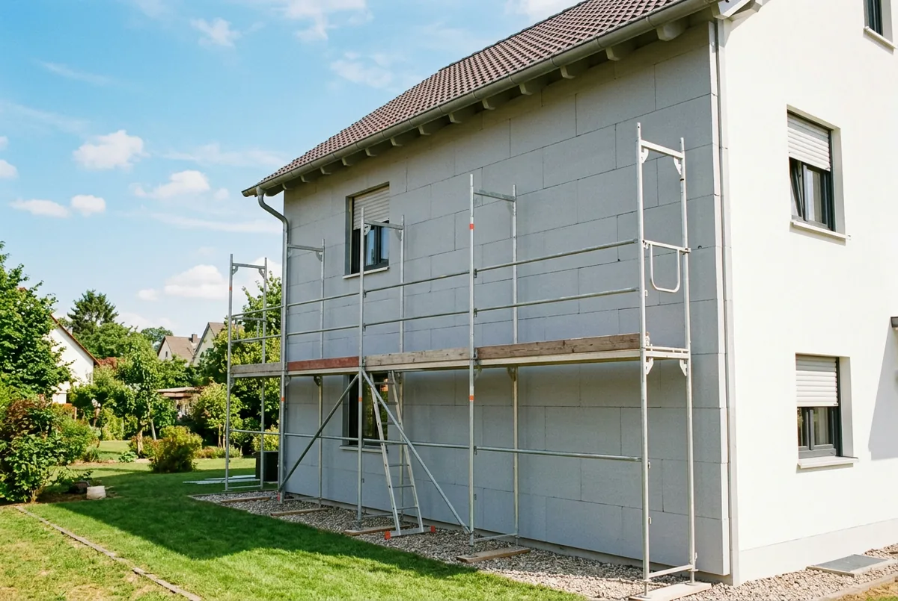
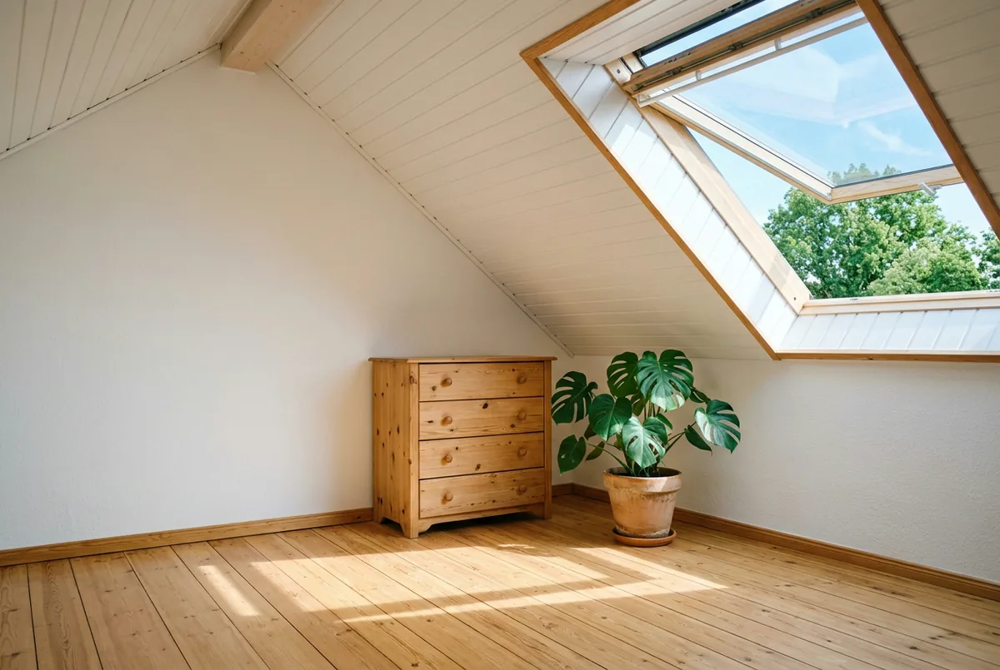
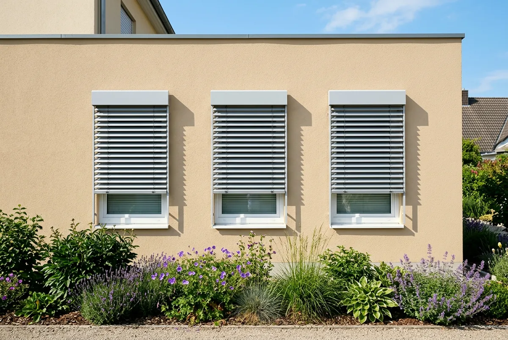

Inhaltsverzeichnis
- Was sich am 21.07.2026 geändert hat
- Grundförderung und Obergrenze
- Höchstkosten je Wohneinheit
- iSFP-Bonus richtig rechnen
- WPB-Bonus: ab 2027, nur Dämmung
- Wann ein Haus ein WPB ist
- Beispielrechnung Dämmung
- Kosten: was belegbar ist
- Sommerlicher Wärmeschutz
- Antrag: BAFA, KfW und TPB-ID
- Fazit
- Kurz und direkt beantwortet
- Häufige Fragen
Das Wichtigste in Kürze
- 15 Prozent Grundförderung: Unverändert für Dämmung, Fenster, sommerlichen Wärmeschutz, Anlagentechnik und Heizungsoptimierung zur Effizienzverbesserung.
- WPB-Bonus erst ab 2027: Die 5 Prozentpunkte gelten nicht seit dem 21.07.2026, sondern ab Quartal 1 2027 — und nur für Dämmung, nicht für Fenster oder Sonnenschutz.
- iSFP-Bonus nur oberhalb 30.000 Euro: Er setzt ein förderfähiges Mindestinvestitionsvolumen von 30.000 Euro brutto voraus und wirkt nur auf den Betrag darüber.
- Neu und kaum erwähnt: Die Obergrenze von 80 Prozent gilt jetzt auch für Einzelmaßnahmen — vorher pauschal 70 Prozent.
- Nur außen zählt: Sonnenschutz wird mit 15 Prozent gefördert, aber nur außenliegend. Innenliegende Rollos sind nicht förderfähig.
Was sich am 21. Juli 2026 für Dämmung und Gebäudehülle geändert hat
Der Grundfördersatz für Dämmung, Fenster und sommerlichen Wärmeschutz liegt auch nach der Reform unverändert bei 15 Prozent. Grundlage ist die Richtlinie BEG EM vom 17. Juli 2026, in Kraft seit dem 21. Juli 2026. Für den Heizungstausch hat sich viel verändert — für die Gebäudehülle weniger, als die Schlagzeilen nahelegen. Vier Änderungen betreffen die Gebäudehülle aber wirklich:
- Die 70/80-Prozent-Obergrenze gilt jetzt auch für Einzelmaßnahmen — vorher pauschal 70 Prozent.
- Der iSFP-Bonus hat eine neue Bedingung: ein Mindestinvestitionsvolumen von 30.000 Euro brutto.
- Neu ist ein WPB-Bonus für besonders ineffiziente Gebäude — aber erst ab dem ersten Quartal 2027 und nur für Dämmmaßnahmen.
- Im BAFA-Verfahren müssen seit dem 21. Juli 2026 neue TPB-IDs erzeugt werden.
Dazu kommt eine neu gefasste Definition des „Worst Performing Building" — alle Änderungen im Zusammenhang im Überblick zur BEG-Reform 2026.
Grundförderung 2026: 15 Prozent — und die neue 80-Prozent-Obergrenze
Für alle Maßnahmen an der Gebäudehülle gilt ein Grundfördersatz von 15 Prozent; 50 Prozent gibt es nur für die Heizungsoptimierung zur Emissionsminderung sowie für Fachplanung und Baubegleitung. Der Fördersatz hängt also nicht vom Bauteil ab, sondern von der Maßnahmenkategorie:
| Maßnahme nach der Richtlinie BEG EM | Fördersatz 2026 |
|---|---|
| Dämmung von Außenwänden, Dachflächen, Geschossdecken, Bodenflächen (Nr. 5.1 a) | 15 % |
| Fenster (Nr. 5.1 b) | 15 % |
| Sommerlicher Wärmeschutz, außenliegend (Nr. 5.1 c) | 15 % |
| Anlagentechnik außer Heizung, etwa Lüftung (Nr. 5.2) | 15 % |
| Heizungsoptimierung zur Effizienzverbesserung (Nr. 5.4 a) | 15 % |
| Heizungsoptimierung zur Emissionsminderung (Nr. 5.4 b) | 50 % |
| Fachplanung und Baubegleitung (Nr. 5.5) | 50 % |
Neu: 80 statt pauschal 70 Prozent
Bisher war der Fördersatz bei Einzelmaßnahmen pauschal auf 70 Prozent gedeckelt. Jetzt gilt die Systematik der Heizungsförderung: 80 Prozent für selbstnutzende Eigentümer mit einem zu versteuernden Haushaltsjahreseinkommen bis 30.000 Euro — bis 40.000 Euro mit Familienzuschlag —, sonst 70 Prozent.
Diese Verbesserung wird kaum irgendwo erwähnt — spürbar ist sie bei reiner Dämmung allerdings selten: Bei 15 bis 25 Prozent ist nicht der Deckel die begrenzende Größe, sondern die Höchstkosten. Relevant wird die Obergrenze dort, wo hohe Sätze zusammenkommen: Heizungsoptimierung zur Emissionsminderung und Fachplanung mit je 50 Prozent.
Förderfähige Höchstkosten: 30.000 Euro je Wohneinheit — oder 60.000
Förderfähig sind bei Einzelmaßnahmen höchstens 30.000 Euro für die erste Wohneinheit, mit iSFP-Bonus 60.000 Euro. Gefördert wird also nicht die Rechnungssumme, sondern höchstens der Betrag, den die Richtlinie je Wohneinheit anerkennt — bei der Dämmung meist die entscheidende Größe.
| Wohneinheit | Höchstkosten ohne iSFP-Bonus | mit iSFP-Bonus |
|---|---|---|
| 1. Wohneinheit | 30.000 € | 60.000 € |
| 2. bis 6. Wohneinheit (je) | 15.000 € | 30.000 € |
| ab der 7. Wohneinheit (je) | 8.000 € | 15.000 € |
Diese Beträge gelten für die Gebäudehülle (Nr. 5.1), die Anlagentechnik außer Heizung (Nr. 5.2) und die Heizungsoptimierung (Nr. 5.4). Maßgeblich ist die Anzahl der Wohneinheiten nach der Sanierung — wer aus zwei Wohnungen drei macht, rechnet mit drei. Ein Mehrfamilienhaus mit drei Wohneinheiten kommt damit auf 60.000 Euro Basis-Höchstkosten, mit iSFP-Bonus auf 120.000 Euro.
Für Fachplanung und Baubegleitung gilt ein eigener Deckel: 5.000 Euro bei Ein- und Zweifamilienhäusern, ab drei Wohneinheiten 2.000 Euro je Wohneinheit und maximal 20.000 Euro.

Der iSFP-Bonus: 5 Prozentpunkte, aber nur oberhalb von 30.000 Euro
Der iSFP-Bonus von 5 Prozentpunkten gilt nicht auf die gesamten förderfähigen Kosten, sondern nur auf den Betrag oberhalb der Basis-Höchstgrenze. Fast überall lesen Sie dagegen: „Mit individuellem Sanierungsfahrplan steigt der Fördersatz von 15 auf 20 Prozent." Das ist verkürzt bis falsch.
Zwei Bedingungen hängen daran: Das förderfähige Investitionsvolumen muss mindestens 30.000 Euro brutto betragen — mehrere Anträge werden dafür nicht zusammengezählt. Und der Bonus gilt nur für die Ausgaben oberhalb der Höchstgrenze, die ohne iSFP gelten würde.
Das BAFA rechnet es in seinem allgemeinen Merkblatt zur Antragstellung selbst vor: Betragen die Investitionskosten beispielsweise 40.000 Euro brutto, wird der iSFP-Bonus von 5 Prozent nur für 10.000 Euro gewährt, während für 30.000 Euro der normale Fördersatz ohne iSFP-Bonus gilt.
Die Mechanik erschließt sich über die Höchstkosten: Ohne iSFP sind bei einem Einfamilienhaus 30.000 Euro förderfähig, mit iSFP verdoppelt sich die Grenze auf 60.000 Euro. Der Bonus wirkt genau in dem Fenster, das der Fahrplan erst aufschließt; darunter bringt er nichts. Bei Mehrfamilienhäusern steigt das Mindestinvest auf die jeweilige Basis-Höchstgrenze — bei drei Wohneinheiten auf 60.000 Euro.
Der iSFP muss außerdem bereits bei der Antragstellung vorliegen, die Umsetzung innerhalb von 15 Jahren erfolgen. Für Wärmeerzeuger, Heizungsoptimierung zur Emissionsminderung und Fachplanung gibt es den Bonus nicht.
Der Fahrplan selbst wird separat gefördert, über die Energieberatung für Wohngebäude: 50 Prozent des förderfähigen Honorars, maximal 650 Euro bei Ein- und Zweifamilienhäusern und 850 Euro ab drei Wohneinheiten, dazu einmalig 250 Euro je Wohnungseigentümergemeinschaft. Von der Reform ist das nicht berührt.
Der neue WPB-Bonus: 5 Prozentpunkte ab Quartal 1 2027 — nur für Dämmung
Der WPB-Bonus für Einzelmaßnahmen existiert — aber er gilt nicht seit dem 21. Juli 2026. Die Richtlinie sieht ihn erst ab Quartal 1 2027 vor. Wer heute einen Antrag stellt, bekommt ihn nicht.
Er gilt auch nicht für die Gebäudehülle insgesamt: Die Richtlinie knüpft ihn an Maßnahmen nach Nummer 5.1 Buchstabe a — und das ist ausschließlich die Dämmung von Außenwänden, Dachflächen, Geschossdecken und Bodenflächen.
| Maßnahme an der Gebäudehülle | WPB-Bonus? |
|---|---|
| Dämmung (Nr. 5.1 a) | ja, ab Quartal 1 2027 |
| Fenster (Nr. 5.1 b) | nein |
| Sommerlicher Wärmeschutz (Nr. 5.1 c) | nein |
Das ist keine Haarspalterei. Das Überblickspapier des Bundeswirtschaftsministeriums vom 9. Juli 2026 formuliert breiter, der Bonus greife „nur für Einzelmaßnahmen an der Gebäudehülle" — seine eigene Überschrift spricht dagegen von „Dämmmaßnahmen". Maßgeblich ist der Richtlinientext, und der ist eng. Wer danach einen Fenstertausch durchrechnet, rechnet zu hoch.
Die weiteren Bedingungen:
- Höhe: 5 Prozentpunkte zusätzlich zur Grundförderung.
- Einbindung: Die Maßnahme muss Bestandteil eines geförderten individuellen Sanierungsfahrplans aus der Energieberatung für Wohngebäude sein; bei Nichtwohngebäuden Modul 2 der Energieberatung.
- Kein Mindestinvest: Anders als beim iSFP-Bonus muss das Mindestinvestitionsvolumen von 30.000 Euro hier nicht erfüllt sein.
- Deckelung: maximal drei Anträge.
Ein Punkt bleibt offen: Die Richtlinie nennt lediglich „ab Quartal 1 2027" und damit kein taggenaues Datum. Ob der 1. Januar oder ein späterer Termin gemeint ist, lässt sich nicht ableiten. Legen Sie die Antragstellung deshalb nicht auf die Jahreswende und lassen Sie den Termin vorher gegen die dann geltende Fassung prüfen.
Lohnt sich der Sanierungsfahrplan in Ihrem Fall?
Ob der iSFP-Bonus überhaupt greift, hängt an Ihrem Investitionsvolumen: unter 30.000 Euro bringt er beim Fördersatz nichts, darüber verdoppelt er vor allem die anerkennbaren Kosten — der Bonus selbst bringt höchstens 1.500 Euro, der Gesamteffekt kann mehrere tausend Euro betragen. Wir rechnen Ihre Ausgangslage durch und prüfen Ihr Handwerker-Angebot auf Förderfähigkeit, bevor Sie unterschreiben.
Kostenlose Erstberatung sichernWann ein Gebäude als Worst Performing Building gilt
„Worst Performing Building" klingt drastischer, als es gemeint ist: Der Begriff bezeichnet Gebäude mit besonders hohem Energiebedarf. Die Definition wurde zum 21. Juli 2026 neu gefasst; das BAFA führt sie im Infoblatt zu den förderfähigen Maßnahmen und Leistungen. Ein Wohngebäude gilt als Worst Performing Building, wenn eine der beiden Bedingungen erfüllt ist:
- Der Jahres-Endenergiebedarf beträgt nach DIN V 18599 mindestens 300 Kilowattstunden je Quadratmeter und Jahr, berechnet nach dem Gebäudeenergiegesetz, oder
- es liegt ein Energiebedarfsausweis der Klasse H vor.
Für Nichtwohngebäude und für Wohngebäude mit mehr als fünf Wohneinheiten und zentraler Warmwasserbereitung kommt ein Kriterium hinzu: Sie gelten auch dann als Worst Performing Building, wenn sie im Baujahr 1957 oder früher errichtet und im Wesentlichen energetisch unsaniert sind.
Zwei Details entscheiden in der Praxis. Erstens geht es um den Bedarf, nicht um den Verbrauch — dazu unser Beitrag zu Verbrauchsausweis und Bedarfsausweis. Zweitens darf die Bedarfsberechnung bei der Antragstellung höchstens ein Jahr alt sein; ein Ausweis von 2019 reicht nicht. Vorab einordnen lässt sich das, indem Sie die Effizienzklasse im Energieausweis lesen.

Beispielrechnung: Dämmung mit und ohne Sanierungsfahrplan
Ein selbstgenutztes Einfamilienhaus mit einer Wohneinheit, Fassade und oberste Geschossdecke, förderfähige Kosten 40.000 Euro brutto — bewusst dieselbe Zahl wie im BAFA-Beispiel. Alle Euro-Beträge sind eine Beispielrechnung, abgeleitet aus Fördersätzen und Höchstkosten der Richtlinie, keine amtlich veröffentlichten Werte.
| Fall | Anerkannte Kosten | Fördersatz | Zuschuss | Eigenanteil |
|---|---|---|---|---|
| Ohne iSFP | 30.000 € (Höchstgrenze greift) | 15 % | 4.500 € | 35.500 € |
| Mit iSFP | 40.000 € (Höchstgrenze 60.000 €) | 15 % auf 30.000 €, 20 % auf 10.000 € | 6.500 € | 33.500 € |
Der Fahrplan bringt hier 2.000 Euro mehr. Nur 500 Euro stammen aus dem Bonus selbst; 1.500 Euro entstehen dadurch, dass überhaupt mehr Kosten anerkannt werden. Läge die Investition bei 28.000 Euro, brächte der iSFP nichts.
Und mit dem WPB-Bonus ab 2027? Dasselbe Haus, aber nur die Fassadendämmung für 25.000 Euro, eingebettet in einen geförderten Sanierungsfahrplan. Der iSFP-Bonus greift nicht, weil das Mindestinvest fehlt — der WPB-Bonus verlangt es nicht: 15 Prozent plus 5 Prozentpunkte ergeben 20 Prozent auf 25.000 Euro, also 5.000 statt 3.750 Euro. Vorausgesetzt, das Gebäude erfüllt die WPB-Definition und der Antrag fällt frühestens in das erste Quartal 2027.
Ob und wie sich iSFP- und WPB-Bonus im selben Antrag addieren, zeigt die Richtlinie an keinem Beispiel. Das lässt sich pauschal nicht sagen und gehört in die Einzelfallprüfung.
Was Dämmung kostet — und wo sich keine seriöse Spanne nennen lässt
Wir nennen hier nur Zahlen aus nicht-kommerziellen Quellen — und sagen, wo es keine gibt.
Fassadendämmung
Die Verbraucherzentrale beziffert ein Wärmedämm-Verbundsystem mit 160 bis 190 Euro je Quadratmeter inklusive Material, Arbeit und Gerüst (Stand 22.10.2025). Ihre Beispielrechnung setzt 175 Euro je Quadratmeter für 110 Quadratmeter Fassade an; nach 15 Prozent Förderung bleiben rund 16.360 Euro Investition.
co2online fasst mehrere Systeme zusammen und weist deshalb 25 bis 300 Euro je Quadratmeter aus: Kerndämmung 25 bis 60 Euro, Wärmedämm-Verbundsystem 160 bis 200 Euro, hinterlüftete Vorhangfassade 180 bis 300 Euro (Stand 03.09.2025).
Der interessanteste Fall steht bei der Verbraucherzentrale eher am Rand: Wird die Fassade ohnehin saniert, fallen für die Dämmung nur Mehrkosten von 90 bis 100 Euro je Quadratmeter an (Stand 22.10.2025) — etwa der halbe Quadratmeterpreis.
Dach, Fenster, Kellerdecke und Sonnenschutz
Hier bleiben wir bewusst ohne Zahl: Für diese Bauteile ließ sich keine belastbare Spanne aus einer nicht-kommerziellen Quelle belegen. Sie hängt so stark von Bauteil, Aufbau und Zustand ab — Zwischensparren oder Aufsparren, mit oder ohne neue Eindeckung —, dass sie sich nicht seriös pauschalieren lässt. Belastbar wird das erst mit einem Aufmaß vor Ort.
Die Hülle zuerst zu betrachten zahlt sich ohnehin doppelt aus: Sie senkt die Heizlast, die Wärmeerzeugung kann kleiner ausfallen — dazu erst dämmen oder erst die Wärmepumpe.

Sommerlicher Wärmeschutz: gefördert, aber nur außenliegend
Sonnenschutz gehört zur Gebäudehülle und ist weiterhin mit 15 Prozent förderfähig. Die Richtlinie ist genau: Gefördert wird der Ersatz oder erstmalige Einbau von außenliegenden Sonnenschutzeinrichtungen mit optimierter Tageslichtversorgung. Anerkannt sind nur Vorrichtungen nach DIN 4108-2, Tabelle 7, Zeilen 3.1 bis 3.3. Nicht förderfähig sind:
- innenliegende Rollos und Jalousien,
- Vorrichtungen nach Zeile 3.4 der Tabelle,
- Vordächer.
Ein Rollo an der Innenseite erfüllt die Anforderung also nicht, auch wenn es die Sonne abhält. Der iSFP-Bonus ist hier möglich, der neue WPB-Bonus dagegen nicht — er bleibt auf Dämmmaßnahmen beschränkt.
Sommerlicher Wärmeschutz ist außerdem nicht nur ein Förderthema, sondern im Gebäudeenergiegesetz als Anforderung geregelt — dazu unser Beitrag zum sommerlichen Wärmeschutz nach GEG.
BAFA oder KfW? Zuständigkeit, TPB-ID und der Weg zum Antrag
Für den Heizungstausch ist seit 2024 die KfW zuständig (Programm 458), für Maßnahmen an der Gebäudehülle, an der Anlagentechnik und für die Heizungsoptimierung das BAFA. Beide Töpfe gehören zur Bundesförderung für effiziente Gebäude (BEG), werden aber getrennt beantragt.
Die Richtlinie teilt das ausdrücklich zu: Die Zuschussförderung nach den Nummern 5.1, 5.2, 5.3 Buchstabe g, 5.4 und 5.5 liegt beim BAFA, nach Nummer 5.3 Buchstabe a bis f sowie h bis j bei der KfW; die Kreditförderung in jedem Fall bei der KfW. Wer Dämmung und Heizungstausch zusammen plant, stellt zwei Anträge bei zwei Stellen — dazu KfW oder BAFA für die Sanierung und der Zuschuss über KfW 458.
Neu im BAFA-Verfahren: TPB-IDs und eine kurze Frist
Ein Detail mit praktischer Wirkung: Ab dem 21. Juli 2026 müssen neue TPB-IDs generiert werden, um einen Antrag nach den neuen Konditionen stellen zu können. Eine früher erzeugte Kennung trägt nicht mehr.
Dazu kommt eine enge Frist: Die technischen Bestätigungen TPB und TPN sind aus datenschutzrechtlichen Gründen maximal zwei Monate gültig. Liegt mehr Zeit zwischen Erstellung und Antragstellung, beginnt dieser Schritt von vorn.
Die fachliche Begleitung ist kein reiner Kostenblock: Fachplanung und Baubegleitung werden mit 50 Prozent gefördert, bei Ein- und Zweifamilienhäusern bis 5.000 Euro. Der teuerste Fehler passiert ohnehin vorher, beim Angebot. Wir prüfen Handwerker-Angebote auf Förderfähigkeit, bevor Sie unterschreiben — herstellerneutral und mit Blick auf die technischen Anforderungen der Richtlinie.
Fazit: welche Maßnahme zuerst — und wann der Antrag sinnvoll ist
Für die Gebäudehülle bleibt es 2026 bei 15 Prozent. Entscheidend sind Höchstkosten, iSFP-Bonus und, ab 2027, der WPB-Bonus. Daraus ergibt sich eine klare Reihenfolge:
- Investitionsvolumen ehrlich schätzen. Deutlich unter 30.000 Euro bringt der Sanierungsfahrplan beim Fördersatz nichts; darüber ist er der wirksamste Hebel.
- Bedarfswert klären. Nur mit einer Bedarfsberechnung, die höchstens ein Jahr alt ist, lässt sich die WPB-Schwelle beurteilen.
- Maßnahme prüfen. Der WPB-Bonus greift nur bei Dämmung. Für Fenster und Sonnenschutz bleibt es bei 15 Prozent plus gegebenenfalls iSFP-Bonus.
- Timing entscheiden. Erfüllt Ihr Gebäude die WPB-Kriterien, kann Warten auf das erste Quartal 2027 rechnerisch sinnvoll sein — ein taggenaues Startdatum nennt die Richtlinie aber nicht.
Die Gegenprobe: Bei 30.000 Euro anerkannten Kosten bringt der WPB-Bonus 1.500 Euro. Muss die Fassade jetzt saniert werden oder hat ein Fachbetrieb kurzfristig Kapazität, ist Warten die teurere Entscheidung. Fördersätze sind ein Argument — selten das stärkste.
Stand der Angaben (26. Juli 2026)
Stand: 26. Juli 2026, alle Angaben ohne Gewähr; die Primärquellen wurden zuletzt am 25. Juli 2026 geprüft. Maßgeblich sind die Richtlinie BEG EM vom 17. Juli 2026 (in Kraft seit 21. Juli 2026) sowie die Merk- und Infoblätter des BAFA in ihrer jeweils gültigen Fassung. Für den WPB-Bonus bei Einzelmaßnahmen nennt die Richtlinie lediglich „ab Quartal 1 2027" und damit kein taggenaues Datum — wann er beantragbar wird, steht noch nicht fest. Die Euro-Beträge sind gekennzeichnete Beispielrechnungen, keine amtlichen Werte. Dieser Beitrag ersetzt keine Rechtsberatung im Einzelfall.
Kurz und direkt beantwortet
Die folgenden Fragen beantworten wir bewusst in wenigen Sätzen — jede Antwort steht für sich und ist ohne den übrigen Text verständlich.
Ab welchem Energiebedarf gilt ein Haus als Worst Performing Building?
Ein Wohngebäude gilt als Worst Performing Building, wenn sein Jahres-Endenergiebedarf nach DIN V 18599 mindestens 300 Kilowattstunden je Quadratmeter und Jahr beträgt oder ein Energiebedarfsausweis der Klasse H vorliegt; so steht es im BAFA-Infoblatt zu den förderfähigen Maßnahmen und Leistungen in der seit dem 21. Juli 2026 geltenden Fassung. Die Bedarfsberechnung darf bei Antragstellung höchstens ein Jahr alt sein. Ein reiner Verbrauchsausweis genügt dafür nicht.
Ab welcher Investitionssumme lohnt sich ein Sanierungsfahrplan für die Förderung?
Für den Fördersatz lohnt er sich erst oberhalb von 30.000 Euro brutto förderfähigem Investitionsvolumen. Die Richtlinie BEG EM vom 17. Juli 2026 knüpft den iSFP-Bonus von 5 Prozentpunkten an genau dieses Mindestinvestitionsvolumen, und der Bonus gilt nur für die Ausgaben oberhalb der Basis-Höchstgrenze. Wer deutlich weniger investiert, erhält über den Fahrplan keinen höheren Fördersatz. Der iSFP muss außerdem bereits bei Antragstellung vorliegen und innerhalb von 15 Jahren umgesetzt werden.
Wie hoch ist die Förderung für Fachplanung und Baubegleitung?
Fachplanung und Baubegleitung durch einen Energieeffizienz-Experten werden nach der Richtlinie BEG EM vom 17. Juli 2026 mit 50 Prozent gefördert, also deutlich höher als die Baumaßnahme selbst. Die förderfähigen Kosten sind bei Ein- und Zweifamilienhäusern auf 5.000 Euro gedeckelt; bei Mehrfamilienhäusern ab drei Wohneinheiten gelten 2.000 Euro je Wohneinheit, höchstens 20.000 Euro je Vorhaben. Zuständig dafür ist das BAFA, nicht die KfW.
Sind neue Fenster förderfähig, und gilt dafür auch der WPB-Bonus?
Neue Fenster werden nach der Richtlinie BEG EM vom 17. Juli 2026 mit 15 Prozent gefördert, der WPB-Bonus gilt für sie jedoch nicht. Die Richtlinie knüpft diesen Bonus ausdrücklich an Maßnahmen nach Nummer 5.1 Buchstabe a, und das ist ausschließlich die Dämmung von Außenwänden, Dachflächen, Geschossdecken und Bodenflächen. Fenster und außenliegender Sonnenschutz bleiben außen vor. Der iSFP-Bonus ist bei Fenstern dagegen möglich.
Wie hoch ist die Förderung für die Heizungsoptimierung?
Das hängt vom Ziel der Optimierung ab. Nach der Richtlinie BEG EM vom 17. Juli 2026 wird die Heizungsoptimierung zur Verbesserung der Effizienz, etwa der hydraulische Abgleich, mit 15 Prozent gefördert. Die Heizungsoptimierung zur Emissionsminderung, die vor allem Biomasseheizungen betrifft, wird mit 50 Prozent gefördert. Beides läuft über das BAFA. Wie stark eine Optimierung den Verbrauch senkt, hängt vom Ausgangszustand der Anlage ab und lässt sich nicht pauschal beziffern.
Wie hoch ist der Zuschuss zur Energieberatung mit Sanierungsfahrplan?
Die Energieberatung für Wohngebäude wird laut BAFA mit 50 Prozent des förderfähigen Beratungshonorars bezuschusst, höchstens 650 Euro bei Ein- und Zweifamilienhäusern und höchstens 850 Euro ab drei Wohneinheiten. Für Wohnungseigentümergemeinschaften kommen einmalig 250 Euro für die Erläuterung in der Eigentümerversammlung hinzu. Diese Förderung ist von der BEG-Reform nicht erfasst; sie beruht auf einer eigenen Richtlinie und nicht auf der Richtlinie BEG EM.
Wie lange ist eine Bestätigung des Energieberaters für den BAFA-Antrag gültig?
Die technische Projektbeschreibung (TPB) und der technische Projektnachweis (TPN) sind laut BAFA-Merkblatt zur Antragstellung aus datenschutzrechtlichen Gründen auf maximal zwei Monate befristet. Wer diese Frist verstreichen lässt, braucht eine neue Bestätigung. Für Anträge nach den seit dem 21. Juli 2026 geltenden Konditionen müssen ohnehin neue TPB-IDs erzeugt werden; ältere IDs lassen sich dafür nicht weiterverwenden. Planen Sie Bestätigung und Antragstellung deshalb eng hintereinander.
Häufige Fragen
Wie hoch ist die BAFA-Förderung 2026 für Dämmung?
Die Grundförderung beträgt 15 Prozent der förderfähigen Kosten. Förderfähig sind höchstens 30.000 Euro je Wohneinheit; mit individuellem Sanierungsfahrplan steigt die Grenze auf 60.000 Euro. Der iSFP-Bonus von 5 Prozentpunkten gilt aber nur für den Betrag oberhalb von 30.000 Euro und setzt ein Mindestinvestitionsvolumen von 30.000 Euro brutto voraus. Bei 40.000 Euro Investition ergibt das 6.500 Euro Zuschuss statt 4.500 Euro ohne Fahrplan — eine Beispielrechnung aus Fördersätzen und Höchstkosten. Ab dem ersten Quartal 2027 kommen für Dämmmaßnahmen an besonders ineffizienten Gebäuden 5 weitere Prozentpunkte hinzu.
Was ist der Worst Performing Building-Bonus (WPB-Bonus)?
Der WPB-Bonus ist ein Zuschlag von 5 Prozentpunkten für Gebäude mit besonders hohem Energiebedarf. Bei den BAFA-Einzelmaßnahmen greift er erst ab dem ersten Quartal 2027 und ausschließlich für Dämmmaßnahmen an Außenwänden, Dachflächen, Geschossdecken und Bodenflächen. Fenster und sommerlicher Wärmeschutz sind ausgenommen. Voraussetzung ist, dass die Maßnahme Bestandteil eines geförderten individuellen Sanierungsfahrplans ist; das Mindestinvestitionsvolumen des iSFP-Bonus muss dafür nicht erreicht werden. Möglich sind maximal drei Anträge.
Was ist die Höchstgrenze der förderfähigen Kosten bei der BAFA-Förderung?
Für die Gebäudehülle, die Anlagentechnik außer Heizung und die Heizungsoptimierung sind 30.000 Euro für die erste Wohneinheit förderfähig, je 15.000 Euro für die zweite bis sechste und je 8.000 Euro ab der siebten. Mit iSFP-Bonus verdoppeln sich diese Beträge auf 60.000, 30.000 und 15.000 Euro. Maßgeblich ist die Anzahl der Wohneinheiten nach der Sanierung; ein Mehrfamilienhaus mit drei Wohneinheiten kommt so auf 60.000 Euro Basis-Höchstkosten. Für Fachplanung und Baubegleitung gilt ein eigener Deckel von 5.000 Euro bei Ein- und Zweifamilienhäusern.
Wird Sonnenschutz von der BAFA gefördert?
Ja, mit 15 Prozent — aber nur außenliegende Sonnenschutzeinrichtungen mit optimierter Tageslichtversorgung. Die Richtlinie verweist dafür auf die DIN 4108-2, Tabelle 7, Zeilen 3.1 bis 3.3. Nicht förderfähig sind innenliegende Rollos und Jalousien, Vorrichtungen nach Zeile 3.4 der Tabelle sowie Vordächer. Ein Rollo an der Innenseite des Fensters erfüllt die Anforderung also nicht, auch wenn es die Sonne spürbar abhält. Der iSFP-Bonus ist hier möglich, der neue WPB-Bonus dagegen nicht: Er bleibt auf Dämmmaßnahmen beschränkt.
Was hat sich bei der BAFA-Förderung seit dem 21. Juli 2026 geändert?
Der Grundfördersatz für die Gebäudehülle ist mit 15 Prozent unverändert. Geändert haben sich vier Punkte: Die Obergrenze des Fördersatzes liegt bei Einzelmaßnahmen jetzt bei 80 Prozent für selbstnutzende Eigentümer mit einem zu versteuernden Haushaltsjahreseinkommen bis 30.000 Euro statt pauschal 70 Prozent. Der iSFP-Bonus setzt ein Mindestinvestitionsvolumen von 30.000 Euro brutto voraus und wirkt nur oberhalb der Basis-Höchstgrenze. Für Dämmmaßnahmen ist ab dem ersten Quartal 2027 ein WPB-Bonus von 5 Prozentpunkten vorgesehen. Und im Verfahren müssen neue TPB-IDs erzeugt werden.